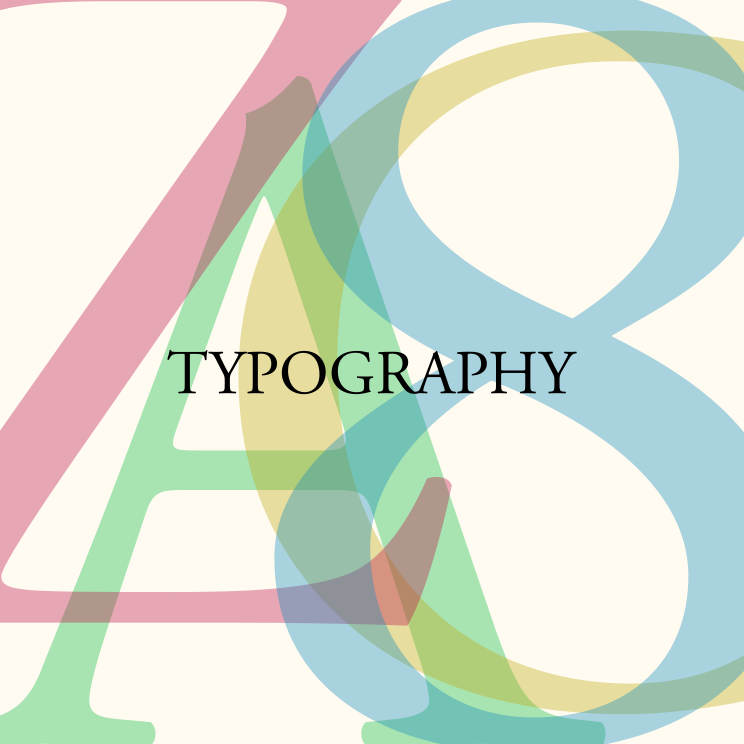

Owen Baribeau
This Website
This website was created as a way to showcase some of my web design/development abilities, and as a home for some of my past work. It uses bold colours in combination a minimalistic, white design, allowing for the content to take centre stage. Upon refreshing the page, a different accent colour will be chosen at random.
NXN.IO
This website was created for a fictional web app as a personal design challenge and procrastination tool. It makes use of a futuristic black and green colour scheme and gratuitous (perhaps too gratuitous) parallax scrolling effects. The navigational links do not direct anywhere meaningful. NXN.IO is a play on my middle name, Nixon.
Trivia Club Recruitment Poster
This poster was designed to be placed around the school in visible locations to attract new club members. Using a minimalistic design and a strong black background, this poster was designed for maximal visibility and impact. Additionally, it was designed in greyscale to save on printing costs.
Project Pulse Graphic
This is an image designed for posting on social media, sharing information about exec applications.
Waterloo Math T-Shirt
Was recruited to design T-shirts for the Waterloo Region Math Team as they travelled to the USA to compete in ARML 2016.
History Club Poster
I was tasked with designing a bright, colourful, bold poster that would look good from afar and communicate the most vital information about the club.

Typography Graphic
A recreational design I created. Captures my passion for strong typography and simple design.
Atlanta Hot Air Balloons
Another design exercise, creating branding for a fictional hot-air ballooon company. The design makes clever use of colour and directional arrows to emphasize the business (red up-arrows = hot air rising).
Other Web Design Experience
I have created and maintained a number of other websites that are no longer accessible on the internet. They include:
- A website for my high school hockey team, including schedules, statistics, and important information for players
- A website as part of an anti-bullying initiative in high school, complete with various articles and links to other resources
- Multiple personal-portfolio websites for myself